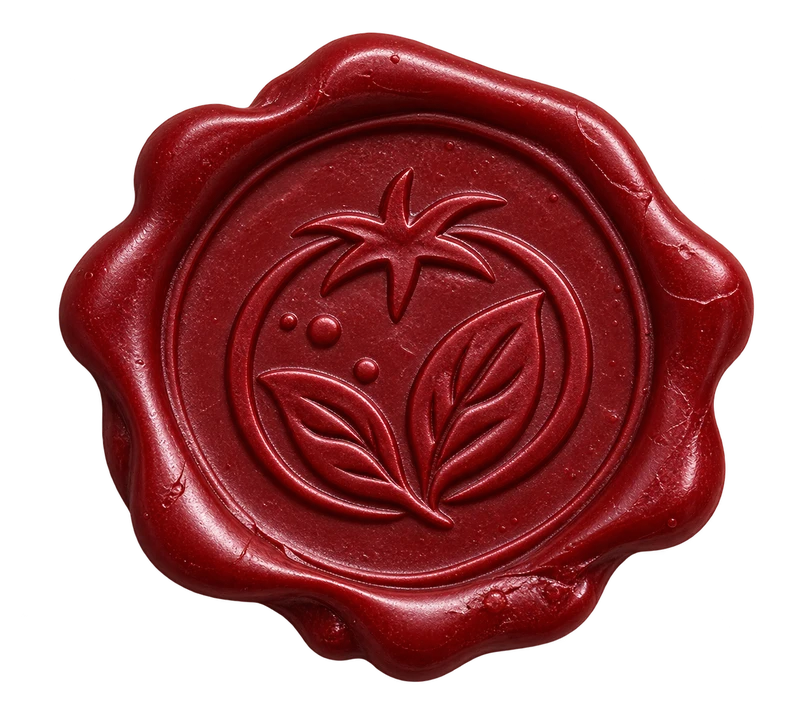
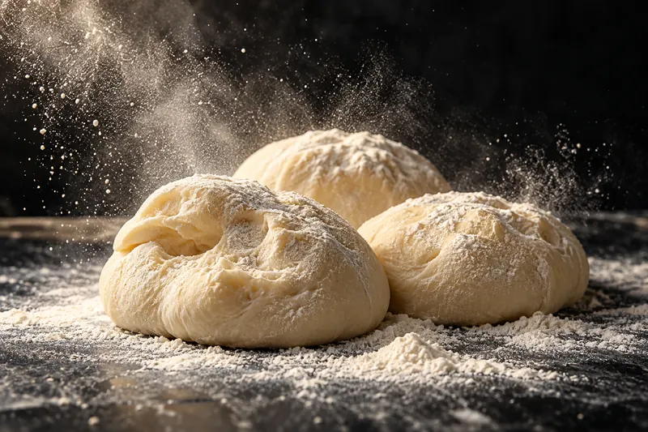

Pizzaria & Forneria Artesanal
editorial paper

FERMENTAZIONE 48H
NOVARA
EXTRA VIRGEM // MOLHO CASEIRO
CRUST CRUST ALCHEMY

48 horas
fermentação lenta da massa // farinha especial
fermentação paciente ➔
MATÉRIA-PRIMA PURA
ingredientes nobres
MATÉRIA-PRIMA PURA
NO COMPROMISE